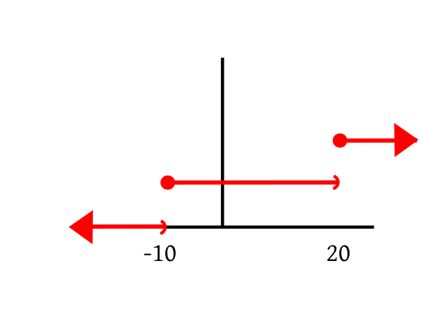
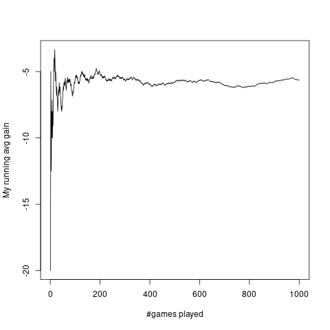
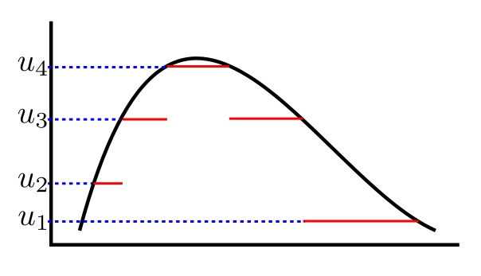
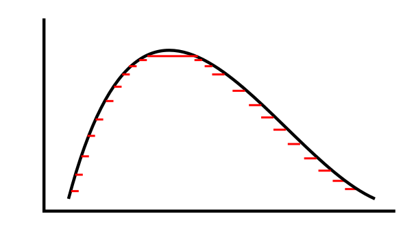
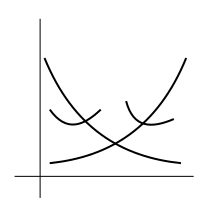
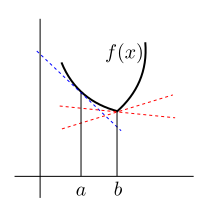
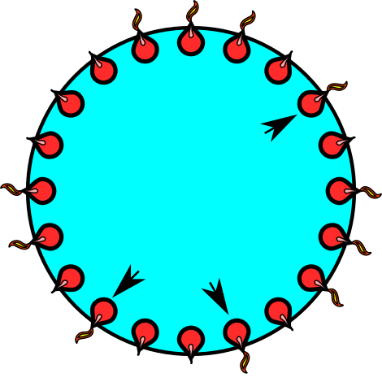
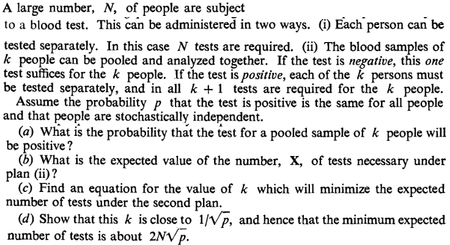

Suppose that I toss a fair coin, and offer you Rs 10 for a head,
and demand $Rs 20$ for a tail. In other words, your gain (in Rs)
from this deal is $10$ for head and $-20$ for
tail. Both $10$ and $-20$ are constants, but since you
do not know which of these two constants you are going to get,
you gain is a variable. Since it varies with chance, we call it
a random variable.
Think of this as made of two stages. In the first stage we have a random
experiment with $\Omega = $
{Head, Tail}. In the second stage we have a function
$X:\Omega\rightarrow {\mathbb R}$
defined as
$$\begin{eqnarray*}
X(head) & = & 10,\\
X(tail) & = & -20.
\end{eqnarray*}$$
There is nothing random about this function. The randomness comes
from the mechanism that decides what goes into this: head or tail?
We use this idea to define random variables mathematically. We
start with a random experiment which is the provider of the
randomness. Then any (real valued) function defined on its sample space is
called a random variable. In probability theory, it is the function
(which is not at all random) that is called the random
variable. Thus, if in the above coin toss example, we replace the
fair coin with a biased coin, but keep the payment rules the
same, then we still have the same random variable.
Beginners often find it odd: a random variable is neither random
nor a variable!
However, it is not as unnatural as it sounds. In calculus also we
write $y = x^2$ and say $y$ is a variable as well
as $y$ is a function of $x.$
EXAMPLE 1:
In the coin tossing example with a fair coin, let your gain be
denoted by $X.$ (or sometimes $X(w)$, if you want to emphasize
that it is a function). Find $P(X=10).$
SOLUTION:
The immediate answer is $\frac 12.$ Let's see the steps that led
to this answer. $P(X=10)$ is the probability that $X$
is $10,$ i.e., the probability that the coin toss has
produced an outcome for which the function $X$ takes the
value $10.$ Thus
$$
P(X=10) = P\big\{w\in\{head,tail\}~:~X(w)=10\big\}.
$$
Now $\big\{w\in\{head,tail\}~:~X(w)=10\big\} = \{head\},$ and so
the problem now reduces to finding $P(\{head\}),$ which is $\frac 12.$
■
The general case, then, looks like this: We have a random
experiment with sample space $\Omega.$ A random
variable $X$ is a function $X:\Omega\rightarrow {\mathbb R}$
where ${\mathbb R}$ is any codomain of our choice. If some one gives
us some $A\subseteq {\mathbb R}$ and asks us to find $P(X\in A),$ we
are to actually find
$$
P\big(\big\{w\in\Omega~:~X(w)\in A\big\}\big).
$$
Remember that this is the definition of $P(X\in A).$
The complicated looking set $\big\{w\in\Omega~:~X(w)\in A\big\}$ is
often abbreviated to $\{X\in A\}$ or $X ^{-1} (A).$
Earlier we had
talked about "good" sets and "bad" sets. The "good" sets constitute a $\sigma$-algebra.
What if someone asks us
to find $P(X\in A),$ where $X ^{-1} (A)$ is a "bad"
subset of $\Omega?$ Well, the answer is: We shall
simply refuse to find $P(X\in A)$ for such an $A.$ We shall
call such an $A$ a "bad" subset of $S$
(w.r.t. this $X$). A subset $A\subseteq S$ is "good" or
"bad" according as $X ^{-1} (A)$ is "good" or "bad" in $\Omega.$
Now intervals are very useful subsets of ${\mathbb R}.$ It would be a pity if an interval turns out to be a "bad" subset.
So we work with only those $X:\Omega\rightarrow{\mathbb R}$ where for all intervals $A$ , the set $X^{-1}(A)$ is a
good subset of $\Omega.$ Such functions $X$ are called Borel measurable.
Sometimes we need to combine the values of two or more random
variables. Say $X,Y$ are both random variables and we want
to compute $X+Y.$ Since random variables are actually
functions, so this sum can be formed only when $X$
and $Y$ have the same domain. This simple point sometimes
needs careful handling as the following example shows.
EXAMPLE 2:
I am playing against two gamblers simultaneosly. One gambler
tosses a fair coin and pays Rs 10 for a head and takes Rs 20 for a
tail. The other gambler takes Rs 3 from me, rolls a fair die and pays me as many
rupees as the outcome. What is my total gain?
SOLUTION:
If I call the gain
from the first gambler $X,$ then $X$ is a function
from $\{head,tail\}$ to ${\mathbb R},$ while the gain from the
second gambler is a function $Y:\{1,2,3,4,5,6\}\rightarrow{\mathbb R}.$
Obviously, $X+Y$ does not make any sense here. We need to
first combine the two random experiments to get the product
sample space: $\{head,tail\}\times\{1,2,3,4,5,6\}$ and then
consider $X,Y$ both as functions from $\Omega$
to ${\mathbb R}.$ For example, $X(head,4) = 10$
and $Y(head,4) = 4-3 = 1.$
Now it is meaningful to talk about $X+Y.$
■
Is any function of a random variable is again a random
variable? Well, for all practical purposes the answer is "yes". But technically speaking, we have to
avoid the "bad" subsets. This is how we do it.
Let $X:\Omega\rightarrow{\mathbb R}$ be any random variable. Let $f:{\mathbb R}\rightarrow{\mathbb R}$ be any Borel-mesurable function, i.e., if $B\in {\mathcal B}$
then $f^{-1}(B)\in {\mathcal B}.$ Then $f(X)$ is again a random variable. Remember that $f(X)$ actually
means the composition function $(f\circ X):\Omega\rightarrow{\mathbb R}.$
EXAMPLE 3:
A fair die is rolled. I shall pay you Rs 10 if the die shows an
even number, you'll pay me Rs 20 otherwise. Let's denote
by $Y$ your gain (in Rs). Express $Y$ as a function from $\{1,2,3,4,5,6\}$ to ${\mathbb R}.$
Let $A = \{10\}.$ Find $Y ^{-1} (A)$ and using it
find $P(Y\in A).$
SOLUTION:
Here $Y^{-1}(A) = \{2,4,6\}.$ So $P(Y=10) = P(\{2,4,6\}) = \frac 16+\frac 16+\frac 16 = \frac 12.$
■
In each of these examples we had a random variable that
took only two values $10$ and $-20.$ Which random variable do
you think is more profitable for you, $X$ or $Y$? Well, both are actually the
same so far as profit goes. Understand this carefully: $X$ and $Y$
are completely different as functions (their
domains are also different), but in terms of the "behaviour of the
output" of the functions they are identical. This "behaviour of the output" is
called the distribution of the random variable. It is the
distribution which we care about mostly in real applications. So
we often start a discussion as
Let $X$ be a random variable taking values $10$
and $-20$ each with probability $\frac 12.$
We understand implicitly that there is some random experiment (say
the coin toss experiment or the die roll experiment or something
similar) and some function from its sample space
to ${\mathbb R}$ such that the distribution is as
specified. In this
course, we shall often omit the sample space or
the function.
How do we specify the distribution of a random variable? Do we make a list of all the "good" sets, and label them with
their probabilities? That would woul be insane, because there are uncountaly infinitely many "good" sets.
It turns out that specifying the probabilities of intervals like $(-\infty, a]$ is enough.
This is what we discuss next.
EXAMPLE 4: Consider the gambling game that tosses a coin, and has payoffs $-10$ for head, and
$20$ for tail. Let $X$ denote the payoff. What is its CDF?
SOLUTION:
Here $X$ takes only two values $-10$ and 20, each with probability $\frac 12.$
So $F(a) = P(X\leq a) = 0$ whenever $a<-10.$
But $F(-10)=P(X\leq -10) = \frac 12.$ Indeed, as long as $a\in[-10,20)$ we have $F(a) = \frac 12.$
At $a=20,$ we have $F(a) = 1.$ In fact, $\forall a\geq 20~~F(a) = 1.$ So the graph looks like this:

■
The following properties of a CDF are more or less obvious.
Shall show
$$
\forall \epsilon>0 ~~ \exists M \in{\mathbb R} ~~ \forall x < M~~ |F(x)-0| < \epsilon.
$$
(Actually we may drop the absolute value sign around $F(x)$
since it is anyway $\geq 0$).
Take any $\epsilon>0.$
Let $A_n$ be the event that $\{X \leq -n\}$
for $n\in{\mathbb N}.$ Then $F(-n) = P(A_n).$
Clearly, $A_1\supseteq A_2\supseteq A_3\supseteq\cdots$
and $\cap A_n=\phi.$
So $P(A_n)\rightarrow 0,$ i.e., $F(-n)\rightarrow 0.$
So $N\in{\mathbb N} ~~F(-N)<\epsilon.$
Choose $M = -N.$
Take any $x < M.$
Then $0\leq F(x) \leq F(M)<\epsilon,$ since $F(\cdot)$ is nondecreasing.
So $|F(x)-0| < \epsilon,$ as required.
Shall show
$$
\forall \epsilon>0 ~~ \exists M \in{\mathbb R} ~~ \forall x > M~~ |F(x)-1| < \epsilon.
$$
(Actually we may drop the absolute value sign
around $|F(x)-1|$ is $1-F(x)$,
since $F(x)\leq 1,$ anyway.)
Take any $\epsilon>0.$
Let $A_n$ be the event that $\{X \leq n\}$
for $n\in{\mathbb N}.$ Then $P(A_n)=F(n).$
Clearly, $A_1\subseteq A_2\subseteq A_3\subseteq\cdots$
and $\cup A_n=\Omega.$
So $P(A_n)\rightarrow 1,$ i.e., $F(n)\rightarrow1.$
So $N\in{\mathbb N} ~~|F(N)-1|<\epsilon.$
Choose $M = N.$
Take any $x > M.$
Then $0\leq 1-F(x) \leq 1-F(M) <\epsilon,$ since $F(\cdot)$ is nondecreasing.
So $|F(x)-1| < \epsilon,$ as required.
Shall show:
$$
\forall a\in{\mathbb R}~~\forall \epsilon>0~~\exists \delta>0~~ \forall
x\in (a,a+\delta)~~|F(x)-F(a)| < \epsilon.
$$
Take any $a\in{\mathbb R}$ and any $\epsilon>0.$
Let $A_n$ be the event that $\left\{X\leq a+\frac 1n\right\}$ for $n\in{\mathbb N}.$
Also let $A$ be the event that $\{X\leq a\}.$
Then $A_1\supseteq A_2\supseteq\cdots$ and $\cap A_n = A.$
So $P(A_n)\rightarrow P(A)$ and hence $F\left(a+\frac 1n\right)\rightarrow F(a).$
Hence $\exists N\in{\mathbb N} ~~ |F\left(a+\frac 1N\right)-F(a)|<\epsilon.$
Choose $\delta = \frac 1N>0.$
Take any $x\in (a,a+\delta).$
Since $F(\cdot)$ is nondecreasing, hence $F(a)\leq F(x)
\leq F(a+\delta) < F(a)+ \epsilon.$
So $|F(a+x)-F(a)|<\epsilon,$ as required.
[QED]
A rather nontrivial theorem is that the converse is also
true. This converse is called the fundamental theorem of
probability.
Proof:Too technical for this course.[QED]
Proof:
Let $F:{\mathbb R}\rightarrow{\mathbb R}$ be nondecreasing and bounded from above.
Take any $a\in {\mathbb R}.$
We shall show that $\lim_{x\rightarrow a-} F(x)$ exists as a finite
number, i.e.,
$$
\exists\ell\in{\mathbb R}~~\forall \epsilon>0~~\exists \delta>0~~\forall x\in(a-\delta,a)~~|F(x)-\ell|\leq\epsilon.
$$
Consider the set $A=\{F(x)~:~x < a\}.$ Then $A\neq\phi$
and bounded from above (by $F(a)$).
So $\sup(A)\in{\mathbb R}.$
Choose $\ell = \sup(A).$
Take any $\epsilon>0.$
Then $\exists y < a~~F(y) > \ell-\epsilon.$
Choose $\delta = a-y > 0.$
Take any $x\in(a-\delta,a) = (y,a).$
Then $F(y)\leq F(x) \leq \ell,$ or, in other words, $\ell-\epsilon\leq F(x)\leq \ell.$
So $|F(x)-\ell|\leq \epsilon,$ as required.
[QED]
Proof:
Take any $a\in{\mathbb R}.$
Let $A = \{X < a\}$ and let $A_n
= \left\{X \leq a-\frac 1n\right\}$ for $n\in{\mathbb N}.$
Then $A_n\nearrow A.$
Hence $P(A_n)\rightarrow P(A).$
So $F\left(a-\frac 1n\right)\rightarrow P(A).$
But $F\left(a-\frac 1n\right)\rightarrow F(a-),$ since $F(a-)$ exists.
Hence $P(X < a) = F(a-),$ as required.
[QED]
Depending on the distribution, a random variable may be of 3
types:
Discrete: These random variables take only countably
many (finite/infinitely many) values.
Continuous: If a random variable takes values in some
set $S$ such that $\forall a\in S~~P(X=a)=0,$ then we
call it a continuous random variable. Notice that
a continuous
random variable is not defined as a random variable that takes a
"continuous stretch of values". However, most continuous random
variables in practice do indeed take all values in an interval, e.g., height
of a randomly selected person.
Neither discrete nor continuous: These take
uncountably many values and for at least one value $a$ we
have $P(X=a)>0.$
The following theorem justifies the adjective "continuous" for a
random variable.
Proof:
Obvious from the last theorem.
[QED]
In this course we shall focus on discrete random variables only.
The distribution of a discrete random variable is completely
specified by the countable set of values it can take, and the
probability with which it takes each of those values. These two
specifications together are called the probability mass
function (PMF) of the rv.
Clearly, $\sum p_i = 1$ and $\forall i~~p_i\geq 0.$ A
consequence of the fundamental theorem of probability is that for
any countable set $\{x_1,x_2,...\}$ and for any
sequence $(p_i)_i,$ for which $\forall i~~p_i\geq 0$
and $\sum p_i=1,$ there is a (discrete) random variable of
which the PMF is $p(x)$ given above.
The CDF of a discrete random variable is a step function like the one we saw in our example.
For many random variables we see a striking example of
statistical regularity. As an example, consider this gambling game:
A fair die is rolled. If it shows an odd number then I pay you Rs 20, else you pay me Rs 10.
A typical plot of my running average gain per game against number of games is as follows:

It is produced by the following code.
w = sample(6,1000,rep=T)
profit =c(-20,10,-20,10,-20,10)
X = profit[w]
avgX = cumsum(X)/(1:1000)
#png('image/explotnow.png')
plot(avgX,ty='l',xlab="#games played",ylab="My running avg gain")
#dev.off()
In fact, it is this phenomenon that first let man to study
probability. If you run a gambling game a large number of time
the running average profit per game becomes more and more stable. Gamblers wanted
to guess this stable value beforehand. They argued as follows:
If I play this game a large number of times (say $n$ times),
then
approximately $\frac n2$ times I should get $10$
and the remaining $\frac n2$ times I should get $-20.$ So
approximately my total gain would be
$$
\frac n2\times 10 + \frac n2\times (-20).
$$
So the average should be approximately this divided by $n,$
i.e.,
$$
\frac 12\times 10 + \frac 12\times (-20) = -5.
$$
Indeed, this simple argument turns out to be remarkably
accurate. Gamblers could not understand why it becomes so
accurate as $n$ becomes large. But nevertheless they used this formula to
find out what they could expect the random variable to do in the
long run.
EXERCISE 1: A random variable $X$ takes the values $-2, -1, 0, 1 $ and $2$ with
probabilities $p,q,1-2p-2q, p$ and $q,$ respectively. Find $E(X).$
::
EXERCISE 2: A random variable takes the values $1,2,...,10$ with probabilities
$p_1,p_2,...,p_{10},$ respectively, where $\sum_i p_i = 1.$ Prove that $1\leq
E(X)\leq 10.$ Also find $p_i$'s if $E(X) = 10.$
Proof:
Here $X\leq Y$ means $\forall \omega\in\Omega~~X(\omega)\leq Y(\omega).$
Let $X$ take values $x_1,...,x_m,$ and $Y$ take values $y_1,...,y_n.$
Let $p_{ij} = P(X=x_i, Y=y_j).$
Clearly, if $p_{ij}>0,$ then we must have $x_i\leq y_j.$
Now
$$\begin{eqnarray*}E(X) & = & \sum_i x_i P(X=x_i) = \sum_i (x_i \sum_j p_{ij}) =\sum_i\sum_j (x_i p_{ij})\\
& \leq & \sum_i\sum_j (y_j p_{ij}) ~~[\because p_{ij}>0\Rightarrow x_i\leq y_j]\\
& = & \sum_j\sum_i (y_j p_{ij})[\because \mbox{addition is associative and commutative}]\\
& = & \sum_j (y_j \sum_i p_{ij}) = \sum_j y_j P(Y=y_j) = E(Y).
\end{eqnarray*}$$
[QED]
So far we have defined expectation for only random variables that take finitely many values.
We shall call such random variables simple.
However, not all random variables are simple. We shall now generalise
the definition of expectation for those cases as well. The generalisation turns out to be slightly tricky.
So read this part very carefully.
First, we shall consider a random variable, $X$, taking only nonnegative values. Now consider
a simple random variable $U$ such that $U\leq X.$
Visualise $X$ and $U$ like this (we are taking $\Omega$ an interval in the diagram):

Then we can compute $E(U).$ Also it is natural to
define $E(X)$ so that $E(U)\leq E(X).$
Now look at $U$ taken as follows.

This $U$ still takes finitely many values, but is much closer to $X $ than before. You can feel that if $U$
is made finer and finer (but still remaining simple), you can make it come arbitrarily closer to $X.$
This leads to the following approach for defining expectation of $X:$
Define $E(X)$ as supremum of $\{E(U)~:~U\mbox{ simple, }U\leq X\}.$
Of course, before we can take supremum we need to make sure that the set is non-empty and bounded.
It is easy to see that the set is non-empty (i.e., for all nonnegative random variable $X$, there is at
least one simple random variable $U$ such that $U\leq X.$ Just take $U\equiv 0.$
Unfortunately, the set need not be bounded above. But that is not a serious problem. We shall
just define $E(X)$ to be $\infty$ in those cases.
::
EXERCISE 3: Suppose $X$ is a nonnegative
random variable that is also a simple random variable. Then we have two definitions of
$E(X),$ as a simple random variable and as a non-empty random variable. Show that both
definitions match in this case.
Finally, we attack the general case, where $X $ can take both positive and negative values.
Here we apply our approach to the positive and the negative parts separately. More precisely, we define
$$X_+ = \max\{X,0\} \mbox{ and } X_- = \max\{-X,0\}.$$
Note that
Both $X_+$ and $X_-$ are nonnegative,
$X = X_+-X_-.$
We already know how to define $E(X_+)$ and $E(X_-).$ We shall combine them in the obvious way to define $E(X):$
::
EXERCISE 4: If $X$ is a nonnegative random variable, then we have two definitions for $E(X).$
Check that they match.
This expectation is also called the Lebesgue integral of $X$ wrt the given probability,
and written as $\int X\, dP.$ However, we shall not use this notation here.
The general definition is not easy to use for computing expectation numerically, except when the random variable is simple.
Here we discuss a few other cases where we have alternative (though equivalent) formulae for computing expectation.
Proof:
To show
$$\sum p_i x_i = \sup\{E(U)~:~U\mbox{ simple, }U\leq X\}.$$
Let $L= \sum_i p_i x_i,$ and ${\mathcal D}=\{E(U)~:~U\mbox{ simple, }U\leq X\}.$
This requires showing two things:
$L$ is an upper bound of ${\mathcal D},$
no number less than $L$ is an upper bound of ${\mathcal D}.$
Step 1: To show
$$\forall U\in{\mathcal D}~~E(U)\leq L.$$
Take any $U\in{\mathcal D}$ be any simple random variable.
Let $U$ take only the values $u_1,...,u_k.$
Let $p_{ij} = P(X=x_i, U=u_j).$
Then $E(U) =\sum_j (u_j \sum_i p_{ij}) = \sum_j\sum_i u_j p_{ij}.$
Also $L = \sum_i x_i \sum_j
p_{ij}=\sum_i \sum_j x_i p_{ij}=\sum_j \sum_i x_i p_{ij}.$
[Why?]
A finite sum can always be interchanged with an infinite sum, when the summands are all nonnegative. For example,
$$\sum (a_n+b_n) = \sum a_n + \sum b_n.$$
If we write $c_{1,n}=a_n$ and $ c_{2,n}=b_n$ then this is
$$\sum_n \sum_i c_{i,n} = \sum_i \sum_n c_{i,n}.$$
Now $p_{ij}>0\Rightarrow u_j\leq x_i.$
Hence $\sum_i u_j p_{ij}\leq \sum_i x_i p_{ij},$ and so $\sum_j\sum_i u_j p_{ij}\leq \sum_j\sum_i x_i p_{ij}.$
Thus, $E(U)\leq L,$ as required.
Step 2: Shall show that no $L'< L$ is an upper bound of ${\mathcal D},$ i.e.,
$$\forall L'< L~~\exists U\in{\mathcal D}~~E(U)> L'.$$
Let $U_n$ be the random variable
$$
U_n =\left\{\begin{array}{ll}X&\text{if }X=x_1,...,x_n\\ 0&\text{otherwise.}\end{array}\right..
$$
Then $U_n$ is a simple random variable such that $U_n\leq X.$
So $U_n\in{\mathcal D}.$
Also $E(U_n)
=\sum_{i=1}^n p_i x_i\rightarrow L.$
Hence $\exists N\in{\mathbb N}~~E(U_N) > L'.$
Choose this $U_N$ as our $U\in{\mathcal D}.$
Since $E(U) > L',$ this completes the proof.
[QED]
::
EXERCISE 5: If $X$ takes the values $x_1,x_2,...$ (not necessarily all nonnegative) with probabilities
$p_1,p_2,...$ where $\sum p_i = 1$ and $\sum |p_i x_i|<\infty,$ then
$$E(X) = \sum p_i x_i.$$
::
EXERCISE 6: If $X$ takes the values $x_1,x_2,...$ (not necessarily all nonnegative) with probabilities
$p_1,p_2,...$ where $\sum p_i = 1$ and $\sum |p_i x_i|=\infty,$ then what are the possibilities for $E(X):$
finite, $\infty$, $-\infty$ or undefined? Give one example of each of the possibilities. Prove the impossibility
of the other(s).
EXAMPLE 5:
Suppose I have a random variable that takes values $-1,0$ and $1$
with probabilities $0.1, 0.5$ and $0.4,$ respectively.
What is $E(X^2)?$
SOLUTION:
Here $X^2$ is a new random variable. Call it $Y,$ say. Then $Y$
takes values $0$ and $1$ with probabilities $0.5$
each.
So $E(Y) = \frac 12.$
■
Here is another technique to arrive at the same result.
$$
E(X^2) = 0.1\times (-1)^2 + 0.5\times 0^2 + 0.4\times 1^2 = 0.5.
$$
This technique is often easier because here we do not need to
find the distribution of $Y=X^2$ first. Both these
techniques will always give the same answer.
Proof:
If $X$ takes only finitely many values, then the result
follows from distributivity of multiplication over addition.
If $X $ takes countably infinitely many values, and $h(X)$ is non-negative, then define
$$
U_n =\left\{\begin{array}{ll}h(X)&\text{if }X=x_1,...,x_n\\ 0&\text{otherwise.}\end{array}\right.
$$
and proceed as for the proof of $E(X)=\sum p_i x_i.$
[QED]
Proof:
The result is trivial if $E(Y)=\infty.$ So we shall focus on the $E(Y)<\infty$ case.
We had defined expectation in three steps: simple, nonnegative and general. Our proof will accordingly have three steps.
Step 1: Simple:
We have already seen this earlier in this page.
Step 2: Nonnegative:
To show $E(X)\leq E(Y),$ i.e.,
$$\sup\{E(U)~:~U \mbox{ simple}, U\leq X\} \leq \sup\{E(V)~:~V \mbox{ simple}, V\leq Y\}.$$
Enough to show that $\{E(U)~:~U \mbox{ simple}, U\leq X\}\subseteq \{E(V)~:~V \mbox{ simple}, V\leq Y\}.$
Take any simple $U\leq X.$ Then, since $X\leq Y,$ we also have $U\leq Y.$ Hence the result.
Step 3: General:
Let $X = X_+-X_-$
and $Y = Y_+-Y_-$.
Since $X\leq Y,$ we must have $X_+\leq Y_+$ and $Y_-\leq X_-.$
Hence, by step 2, $E(X_+)\leq E(Y_+)$ and $E(Y_-)\leq E(X_-).$
So $E(X_+)-E(X_-)\leq E(Y_+)-E(Y_-),$ as required.
[QED]
An immediate consequence of the above theorems is the following
theorem.
Proof:
Easy.
[QED]
The condition "$X$ always lies in $[a,b]$" may be
written as $P(X\in[a,b])=1.$
By the way, if $X$ can take values $x_1,x_2,...$, there
is no guaranty that $E(X)$ will equal any of
the $x_i$'s. For example, if $X$ is the outcome of
a fair die, then $E(X)=3.5,$ which is not a possible
outcome.
Proof:
Do it yourself. Hint: Here also you need to proceed in three steps: simple, nonnegative, general.
[QED]
::
EXERCISE 7:
If $E(X) = \mu,$ then what is $E(X-\mu)?$
Proof:
Another three step proof. The first and third steps are pretty easy. The second step is tricky.
We shall give the details next semester. But here are the main substeps for the the second step:
Substep 1: We can show that for any non-negative random variable, $Z$, we have an non-decreasing
sequence of simple random variables $(W_n)$ such that $W_n\nearrow Z.$
Substep 2: We can show that if we have any sequence $(W_n)$ and any nonnegative random
variable $Z$ with $W_n\nearrow Z$, then $E(W_n)\rightarrow Z.$
Substep 3: We apply the above two substeps to both $X$ and $Y$ to obtains
non-decreasing sequences $(U_n)$ and $(V_n)$ such that $E(U_n)\rightarrow E(X)$ and
$E(V_n)\rightarrow E(Y).$ Since $U_n+V_n\nearrow X+Y$, the result follows from the simple case.
[QED]
Next we shall need a new concept, that of a convex
function. Graphically, $f(x)$ is a convex function if its
graph is like a bowl opening upwards (possibly slanted). Some
examples are shown below.

Mathematically we may define a convex function as follows.
While this definition is graphically quite intuitive, you
may have seen other definitions of convexity
elsewhere. Read here to learn more
about equivalences between different definitions of convexity.
In the following diagram the blue line is $\ell_a.$ Both the
red lines are candidates for $\ell_b.$

Proof:
Let $\mu = E(X).$ Consider $\ell_\mu(x)$ as mentioned
in the definition of convexity.
Since the graph of $\ell_\mu(x)$ is a straight line passing
through $(\mu,f(\mu)),$ hence it must be of the form
$$\ell_\mu(x) = f(\mu)+m(x-\mu),~~x\in{\mathbb R}.$$
So
$$
E(f(X)) \geq E(\ell_\mu(X)) = E(f(\mu))+mE(X-\mu) = f(\mu)+0 = f(E(X)),
$$
as required.
[QED]
::
EXERCISE 8: Which is larger $(E(X))^2$ or $E(X^2)?$ Assume
that both exist finitely.
Often we have to find $E(X)$ where $X$ is the count of something, e.g., number of heads in 100 tosses of coin,
or number of times something interesting happens. If you want to find $E(X)$ directly from the definition, then you
need to find the distribution of $X$ first, which is often difficult. In such situatons the
indicator trick may provide a short cut.
EXAMPLE 7: We have a ring of 20 lamps. A wind blows and a random subset of lamps go out. Find
the expected number of singleton lights (i.e., lighted lamps with both neighbours off).

The singletons are shown with arrowheads
SOLUTION:
Let $X$ be the number of singletons. Finding the distribution of $X$ is not very difficult, but still we shall
demonstrate the use of the indicator trick.
We shall use the arrowheads as our random variables. Let the lamps be numbered from 1 to 20. Define $L_i=1$
if $i$-th lamp is on and is a singleton, and $0$ else. In other words, $L_i=1$ means we have put an
arrow head at position
$i.$
Each $L_i$ is called an indicator variable.
Clearly $X = L_1+\cdots+L_{20}.$
So $E(X) = E(L_1)+\cdots+E(L_{20}) = 20 E(L_1),$ since by symmetry all the $L_i$'s have the same distribution.
To find $E(L_1)$ we need to find just $P(L_1=1)$, which involves only lamp 1 and its two neighbours. It should
be clear that $P(L_1) = \frac{1}{8}.$
Hence $E(X) = \frac{20}{8} = \frac 52.$
■
EXERCISE 10: Show that if $X$ is a random variable taking only non-negative
integer values, then
$$E(X) = \sum_{k=1}^\infty P(X\geq k).$$
This formula often proves useful for finding expected counts.
Let $p_n = P(X=n)$ for $n=0,1,2,3,...$
Then
$$\begin{eqnarray*}
P(X\geq 1) & = & p_1 + p_2 + p_3+\cdots\\
P(X\geq 2) & = & \phantom{p_1 +} p_2 + p_3+\cdots\\
P(X\geq 1) & = & \phantom{p_1 + p_2 +} p_3+\cdots\\
\cdots
\end{eqnarray*}$$
Now add columnwise. Non-negative series do not change value when
you rearrange the terms.
::
EXERCISE 11: For a group of $n$ people find the expected number of days of the year which are
birthdays of exactly $k$ people. (Assume 365 days and that all arrangements are equally
probable.) Also find the expected number of multiple birthdays. How large should $n$ be to
make this expectation exceed 1?
Let $X_i = \left\{\begin{array}{ll}1&\text{if }\mbox{exactly $k$ people have birthdays on day} i\\ 0&\text{otherwise.}\end{array}\right..$
Then $X = \sum_1^{365} X_i.$
So $E(X) = \sum_1^{365} E(X_i).$
Expected number of days of the year which are birthdays of exactly $k$ people is $\binom{n}{k}\frac{364^{n-k}}{365^{n-1}}.$
Expected number of multiple birthdays is $365\left\{1-\left(\frac{364}{365}\right)^n - \frac{n\times 364^{n-1}}{365^n}\right\}.$
[Corrected a typo thanks to Ahan Mukherjee.]
::
EXERCISE 12: A man with $n$ keys wants to open a door (where exactly one key works). He tries the
keys independently at random. Find the expected number of trials needed to open the door if
keys are tried (a) with replacement (b) without replacement.
$P(X=1) = P(X\leq 1)-P(X< 1).$
Now $\{X < 1\} = \lim_n \left\{X\leq 1-\frac 1n\right\}.$ Since this is an increasing limit, hence by continuity of
probability, we have $P(X<1) = \lim_n P\left(X\leq 1-\frac 1n\right) = \lim_n F\left(1-\frac 1n\right) = F(1-).$
Hence $P(X=1) = F(1)-F(1-).$
Here $p$ is he says, and $p^*$ is what he believes. The meteorologist is not an honest one, and may
say something different from what he believes. His only aim is to maximise the expected score.
The expected score is
$$p^*(1-(1-p)^2) + (1-p^*)(1-p^2).$$
This is to be maximised wrt $p$ (with $p^*$ fixed).
Differentiate (or think of the graph) to see that the maximising value of $p$ is $p^*.$
Company pays the amount $A$ with probability $p.$ It pays $0$ with probability $1-p.$
So its expected payoff is $pA.$
Suppose that it charges $B.$ Then expected profit is $B-pA.$ To keep it 10% of $A$ we need $B = (p+0.1)A.$
(a) $E(X)$ would be larger, because when a student is selected at random, he is more likely to come from the larger
buses. So $E(X)$ is a weighted average of the bus sizes where the larger buses get more weight.
But $E(Y)$ is the simple average of the bus sizes.
(b) $E(X) = \frac{40^2+33^2+25^2+50^2}{40+33+25+50}.$
$E(Y) = \frac{40+33+25+50}{4}.$
By the pigeon hole principle, the winner will be decided by at least 2 and at most 3 games.
So the sample space is $\{AA, BB, ABA, BAA, BAB, ABB\}.$ The probabilities are, respectively,
$p^2, q^2, p^2q, p^2q, pq^2, pq^2,$ where $q=1-p.$
If $X$ is the random variable denoting the number of
games played, then it takes the values, respectively, $2,2,3,3,3,3.$
So $E(X) = 2(p^2 + q^2) + 3(2p^2q + 2pq^2) = 2(1+pq).$
This is maximised when $pq = p(1-p)$ is maximised, which is when $p=\frac 12.$
(a) Let $X_i = \left\{\begin{array}{ll}1 &\text{if }i\mbox{-th draw is white}\\ 0&\text{otherwise.}\end{array}\right.$ for $i=1,...,10.$
Then $E(X_i) = P(i$-th draw is white$)=\frac{17}{40}.$
So $E(X) = 10\times \frac{17}{40} = \frac{17}{4}.$
(b) Let $Y_i = \left\{\begin{array}{ll}1&\text{if }i\mbox{-th white ball is selected}\\ 0&\text{otherwise.}\end{array}\right.$ for $i=1,...,17.$
Then $E(Y_i) = P(i$-th white ball is delected$)=\frac 14.$
So $E(X) = 17\times \frac 14 = \frac{17}{4}.$
Let $X_i$ be as given in the hint.
Let $X = $ number of intact marriages.
Then $X = \sum_1^{100} X_i$
Now $E(X_i) = \binom{198}{50}/\binom{200}{50}=\frac{150\times149}{200\times199}.$
So $E(X) = \frac{150\times149}{2\times199}.$
Here we assume that $E(X)$ exists finitely. The inequality holds even if
$E(X^2)$ is not finite (with the interpretation that $\forall a\in{\mathbb R}~~\infty \geq a$.)
You may either use Jensen's inequality with the convex function $f(x)=x^2$ or the fact that $V(X)\geq 0.$
Equality if and only if $V(X)= 0$, i.e., if $X$ is a degenerate random variable.
::
EXERCISE 26:

You may use some approximations in parts (c) and (d) of this problem. For instamce there are
$\frac nk$ groups of $k$ patients each, even if $\frac nk$ is not an integer. You
may also differentiate w.r.t. $k.$
(a) $1-(1-p)^k.$
(b) For a group of size $k$ the random variable $X$ takes the value
$k+1$ with probability $1-(1-p)^k$ and the value $1$ with probability $(1-p)^k.$
So $E(X) = (k+1)(1-(1-p)^k)+(1-p)^k = k+1-k(1-p)^k.$
If there are $N$ people in all, where $N = qk+r$ with $r\in\{0,...,k-1\}$,
then this applies to each of the $q$ groups and also the reaminder group of size $r.$
So the required expectation is
$$q(k+1-k(1-p)^k)+r+1-r(1-p)^r.$$
If $k$ divides $N$, then this is
$$\frac Nk(k+1-k(1-p)^k) = N+\frac Nk-N(1-p)^k = N\left(1+\frac 1k-(1-p)^k\right).$$
(c) Enough to minimise $1+\frac 1k-(1-p)^k$ wrt $k$ for given $p.$
Treating $k $ as a continuous variable, the derivative is
$$-\frac{1}{k^2}-(1-p)^k\log(1-p).$$
Here $P(X=k) = \binom{k-1}{r-1}p^rq^{k-r}$ for $k=r,r+1,...$ where $q = 1-p.$
So
$$E\left(\frac rX\right) = \sum_{k=r}^\infty \binom{k-1}{r-1}p^rq^{k-r}\frac rk.$$
Ignoring the terms free of $k$, and massaging the rest a little, the sum reduces to
$$\sum_{k=0}^\infty \frac{k(k-1)\cdots(k-r+2)}{k+1} q^k.$$
This may be handled by repeated term by term integration and differentiation of the power series
$$1+q+q^2+\cdots = \frac{1}{1-q}$$
for $|q|<1.$
You may like to deal with the $r=1$ case first.
Let $X = $ the number of trials needed to get the first 6.
Then $P(X=k) = \left(\frac 56\right)^{k-1}\frac 16$ for $k=1,2,3,....$
So $E(X) = \sum_{k=1}^\infty k \left(\frac 56\right)^{k-1}\frac 16.$
Now, we know that $\frac{1}{1-x} = 1+x+x^2+x^3+\cdots$
if $|x|<1.$ This may be differentiated term by term (needs a justification that you should learn in your real analysis
class) to give
$$\frac{1}{(1-x)^2} = 1+2x + 3x^2+\cdots.$$
Put $x=\frac 56$ to find the required expectation.
Assuming the dice to be fair, the answer does not depend on the number
the gambler bets on.
Let $X$ be the loss for unit stake on 1.
Then
$$X = \left\{\begin{array}{ll}
1&\text{if }\mbox{no die shows 1}\\
-1&\text{if }\mbox{exactly 1 die shows 1}\\
-2&\text{if }\mbox{exactly 2 dice show 1}\\
-3&\text{if }\mbox{all 3 dice show 1}\\
\end{array}\right..$$
So $P(X=1) = \left(\frac 56\right)^3$, $P(X=-1) = 3\left(\frac 16\right)\left(\frac 56\right)^2$,
$P(X=-2) =
3\left(\frac 16\right)^2\left(\frac 56\right)$ and $P(X=-3) = \left(\frac 16\right)^3.$
Hence
$$E(X) = \left(\frac 16\right)^3(5^3-3\times 5^2-6\times5-3).$$
Let $T_1 = 1.$
Let $T_i = $ waiting time for the $i$-th new coupon after the $(i-1)$-th coupon has been encountered, for
$i=2,3,4,5.$
Consider the following example to understand the definition of $T_i$'s. Suppose that the coupons arive in the order:
3 3 4 3 5 4 3 4 2 3 4 5 1.
The first occurences of each type of coupon have been shown in red. They are at positions
$$S_1 = 1, S_2 = 3, S_3 = 5, S_4=9\mbox{ and } S_5=13.$$
We are defining $T_i = S_i-S_{i-1}$ for $i=1,...,5$ where $S_0=0.$
Then the $T_i$'s are independent random variables.
$T_1$ is degenerate at 1, and for $i=2,...,5$ we have
$$P(T_i = k) = q_i^{k-1}p_i$$ for $k\in{\mathbb N}$ where $p_i = \frac{i-1}{5}$ and $q_i = 1-p_i.$
We can easily find $E(T_i)$'s.
The answer to the problem is $E(T_1+\cdots+T_5) = 1+E(T_2)+\cdots+E(T_5).$
The same person may be part of two marriageable couples.
The guys are all distinct, and so are the girls (though it is not clear from my wonderful artwork!).
The diagram shows 8 runs, i.e., stretches of same gender. A single girl or a single guy consitute the shortest possible
run. Notice that the number of marriageable couples is one less than the number of runs.
Thus, the number of arrangements with $k$ marriageable couples is
the same as the number of arrangements with $k+1$ runs.
Here $k$ can take any value between $1$ and 14.
As an example let us find $P(k=3).$
The total number of arrangements is of course $15!.$
We need $3+1=4$ runs: either male-female-male-female or female-male-female-male.
Step 1: Arrange the guys: 8! ways
Step 2: Arrange the girls: 7! ways
Step 3: Insert a separator to split the guys into two runs: 7 ways
Step 4: Insert a separator to split the girls into two runs: 6 ways
Step 5: Mix them: 2 ways (M-F-M-F or F-M-F-M)
So
$$P(k=3) = \frac{8!\times7!\times7\times6\times2}{15!}.$$
Find these for all possible values $k$, and then compute expectation.
Or...use the indicator trick!!!
Let there be $n$ workers. Let $X$ be the number of working days.
Let $X_i=\left\{\begin{array}{ll}1&\text{if }i\mbox{-th day is a working day}\\ 0&\text{otherwise.}\end{array}\right..$
Then $X = \sum_1^{365} X_i.$
Now $E(X_i) = P(i$-th day is a working day$)= \left(\frac{364}{365}\right)^n.$
So $E(X) = 365\times \left(\frac{364}{365}\right)^n.$
Hence expected number of man-days is
$365n\times \left(\frac{364}{365}\right)^n=f(n)$, say.
We want to maximise this wrt $n.$
Now
$$\frac{f(n+1)}{f(n)} = \frac{n+1}{n}\times \frac{364}{365}.$$
This is $>/=/< 1$ according as $364 >/+/< n.$
So the function is maximised at $n=364$ and $365.$